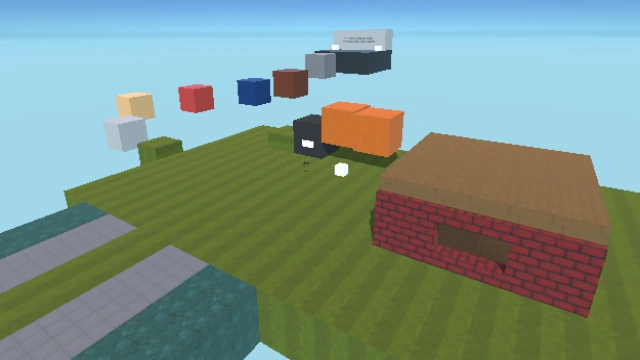
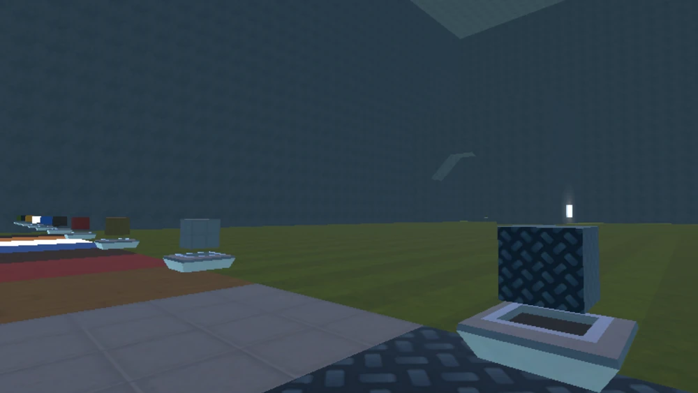

Тестовая карта
Это самая обыкновенная карта в Wall Plast — это первая карта, с которой начинается игра. На данной карте также можно получить кубган.
Город
Довольно обширная карта, которая, как предполагают, является самой детализированной с точки зрения декора в игре. Однако доступ к кубгану на этой карте отсутствует.
Куб Ган
Кубган — это территория, созданная исключительно для проверки кубгана и строительства. Это, вероятно, самая обширная карта в игре для стройки, и, кстати, здесь можно найти различные типы кубгана.
Тёмный лес
Тёмный лес представляет собой крупнейшую локацию в игре. Эта карта выделяется тем, что на ней можно приобрести особый предмет — фонарик, а также тем, что здесь полная тьма.